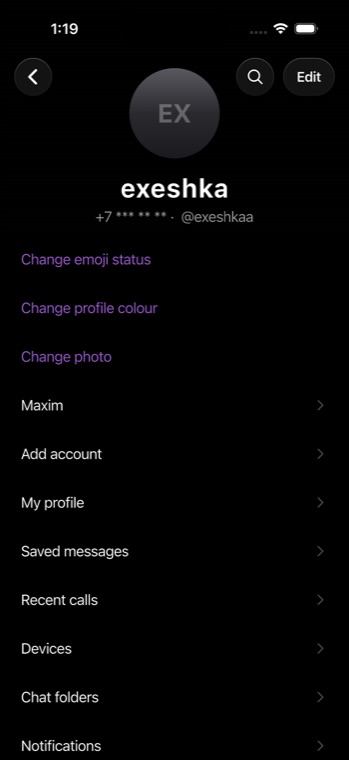
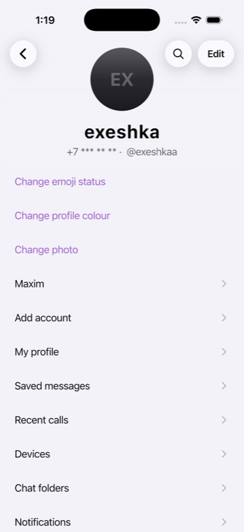

Каталог / Списки и заголовки
StretchHeader
Шапка профиля, растущая при протягивании списка вниз: аватар → фото во весь экран.
Как выглядит


Что это
builder получает StretchInfo (степень раскрытия), MorphBox двигает прямоугольник и радиус между двумя состояниями. Есть двухступенчатый pull (onOverpull) и хаптика.
StretchHeader(
collapsedHeight: 220,
expandedHeight: 640,
builder: (context, info) => Stack(children: [
MorphBox(from: avatarRect, to: fullRect, t: info.t, child: Image.asset('assets/me.jpg', fit: BoxFit.cover)),
]),
)Параметры (из dartdoc)
StretchHeader
| Параметр | Тип | По умолчанию | Описание |
|---|---|---|---|
builder | StretchBuilder | required | |
collapsedHeight | double | required | Height at rest, from the top edge of the screen. |
expandedHeight | double | required | Height when snapped open, from the top edge of the screen. |
mode | StretchHeaderMode | StretchHeaderMode.snap | |
compactHeight | double? | Height of the pinned compact state, from the top edge of the screen: what is left when the list scrolls the header away. Default: the status bar plus the bars of the ChromeScaffold (StretchInfo.topInset). | |
hideEdgeFade | bool | true | The scaffold's top edge fade is off while this header is there (default): the header is pinned and draws its own background, and the fade would dim its compact title. |
backgroundColor | Color? | The header is one opaque construction (the bar buttons above it belong to it): this is its background, painted behind what builder draws. Default: the page background (SwiftUiThemeData.background). | |
edgeFadeHeight | double? | Height of the soft edge UNDER the header's lower border, where the list that scrolls under the pinned header fades out (instead of a gradient lying over the header itself). Its opacity follows StretchInfo.collapse: nothing scrolls under the header at rest. | |
fadeOpacity | double | 0.78 | Peak opacity of the fade over the list inside the header's own area when it is compact (0..1): below 1 the rows stay faintly visible under the bar buttons and the title, like under the scaffold's own bars. 0: no fade. |
triggerDistance | double | 70 | Pull (pt) that a release must have passed to snap the header open. |
overpullDistance | double | 90 | Second stage, in the open state: a pull (a NEW drag, after the one that opened the header) that passes this distance (the scroll offset, pt) calls onOverpull, e.g. to open the full profile or the photo viewer (what Telegram does). |
onOverpull | VoidCallback? | Called when an open header was pulled past overpullDistance and released. Not called when null. | |
overpullOnRelease | bool | false | false (default): onOverpull fires the moment the pull reaches overpullDistance, the finger still down. true: only when the finger is lifted after passing it. |
collapseAt | double | 24 | Scroll offset (pt) past which an open header closes again. |
haptics | bool | true | A light tap when the pull crosses triggerDistance. |
onExpandedChanged | ValueChanged<bool>? |
MorphBox
| Параметр | Тип | По умолчанию | Описание |
|---|---|---|---|
from | Rect | required | |
to | Rect | required | |
t | double | required | |
child | Widget | required | |
fromRadius | double | 0 | |
toRadius | double | 0 | |
curve | Curve | Curves.linear |
Импорт: import 'package:swiftuikit/swiftuikit.dart';